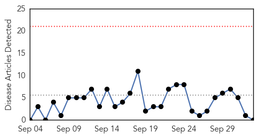

Meningitis
30-Day Web Trend
0 alerts, 0 warnings

30-Day Twitter Trend
1 alerts, 0 warnings
Article Locations

Article Confidences

Top Articles:
-
No articles found for Oct 03, 2015
Top Tweets:
-
No tweets found for Oct 03, 2015
Influenza
30-Day Web Trend
5 alerts, 3 warnings

30-Day Twitter Trend
0 alerts, 0 warnings

Article Locations

Article Confidences

Top Articles:
- 0.985
- News, Sports, Jobs, Community Information - Dunkirk
- 0.983
- Flu season is around the corner, officials say
- 0.980
- Prepare now for flu season
- 0.975
- MCPH recommends flu shot
- 0.963
- A first for flu season: a new, more robust four-strain vaccine
- 0.935
- New Brunswick pharmacists urge people to get flu shots
- 0.933
- 165 hospitals under the scanner
- 0.885
- Traditional Japanese Pickle Called Suguki May Protect Against Flu
- 0.844
- Cyclists take to the streets in support of various Muskoka charities
- 0.844
- 'Set up emergency response teams to tackle poultry diseases'
- 0.751
- October 2, 2015 Archives
- 0.671
- Rivers among 21States with bird flu
Top Tweets:
-
No tweets found for Oct 03, 2015